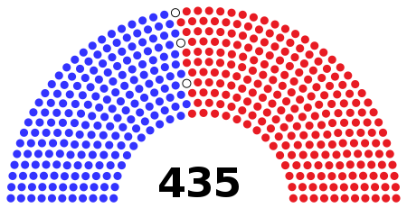
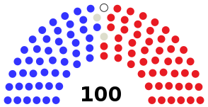

The United States Congress
U.S. House of Representatives
Your Representative is your voice
Know * Connect * Be Heard
U.S. Senate
The United States Congress has a total of 535 members.
Every two years the 435 seats in the House of Representatives and about one third of the Senate's 100 seats become vacant for the midterm elections.
It has become a common trend for the presidential election to garner national attention, while midterm elections in off-election years tend to go unnoticed.
Why does this happen?
The American people tend to view the presidential election as more important or exciting.
As a result regular citizens are more willing to go out and vote in each presidential election.
Gallup polling revealed that 25% of Americans could not answer basic questions about Congress correctly.
What can our site do for you?
Our site makes it easy for users to navigate hundreds of Congress members with filters based on name, chamber, party affiliation, and state.
Each member's page details the committees they've served on, years spent in office, as well as contact information and links to social media platforms.
Additionally users can access a list of bills that the Congress member has sponsored throughout the years.
Find your representatives
What do we want you to do with this?
Our team's goal is to give ordinary people easy and reliable access to information on the inner workings of the US Congress.
We hope that our site will help people get to know their representatives, make informed decisions, and make their voices heard.